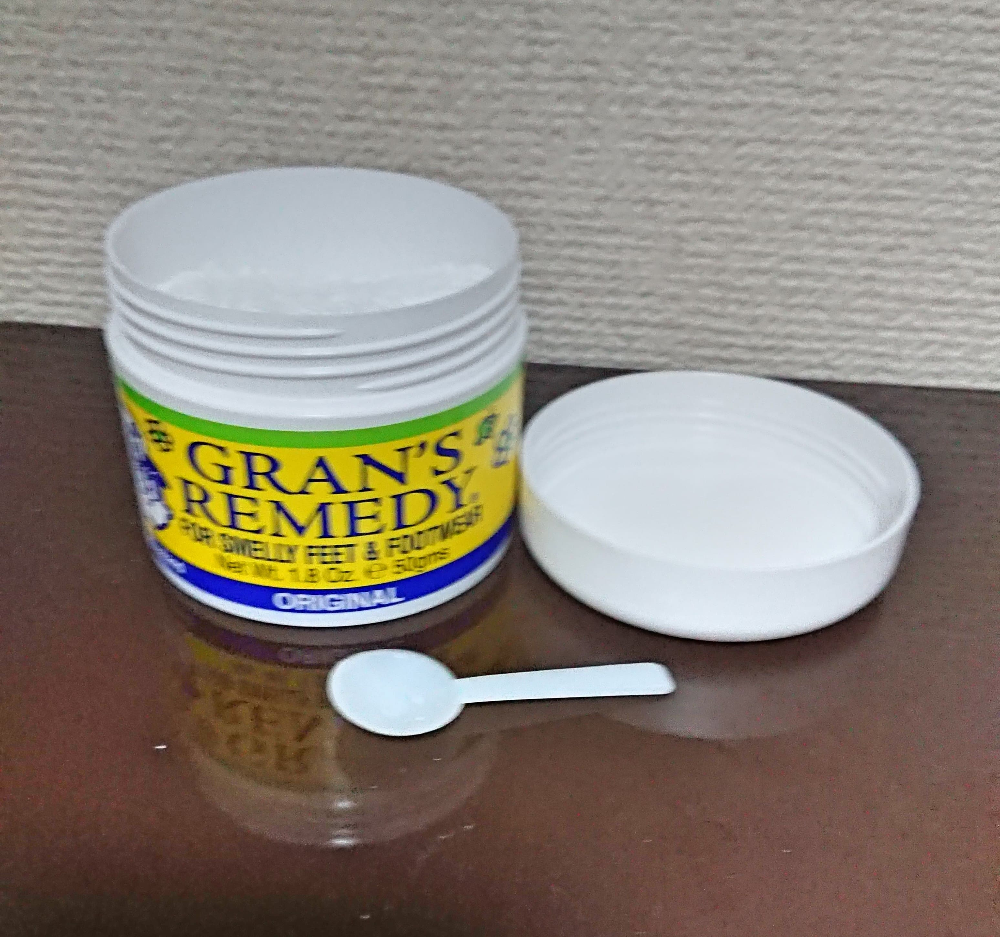
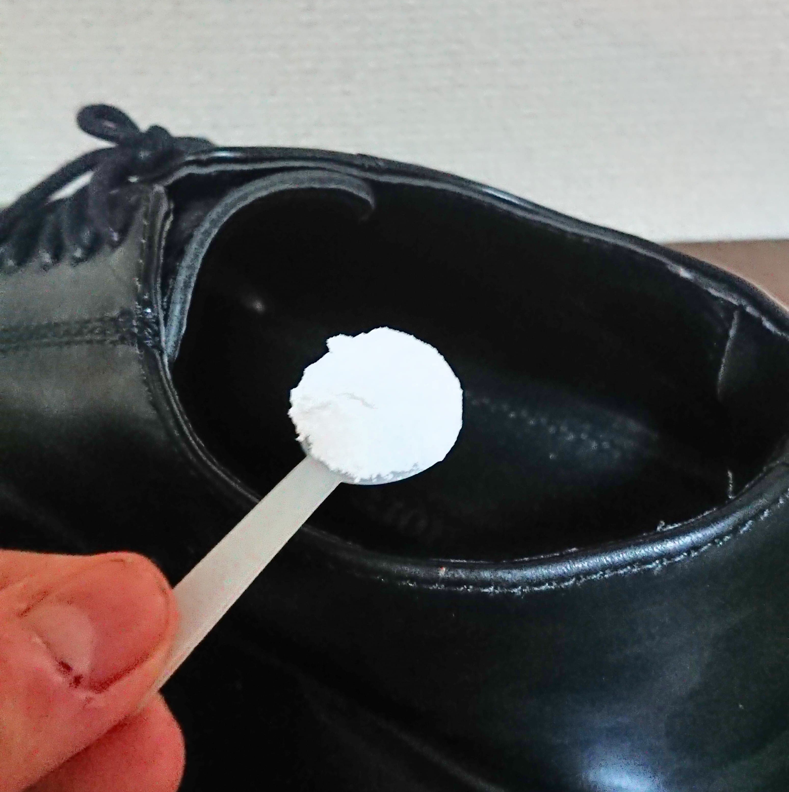
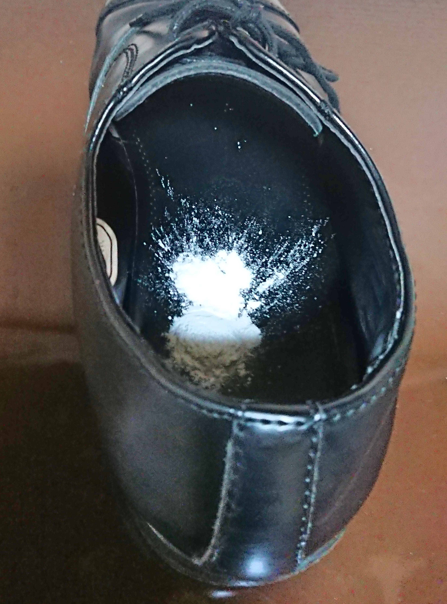
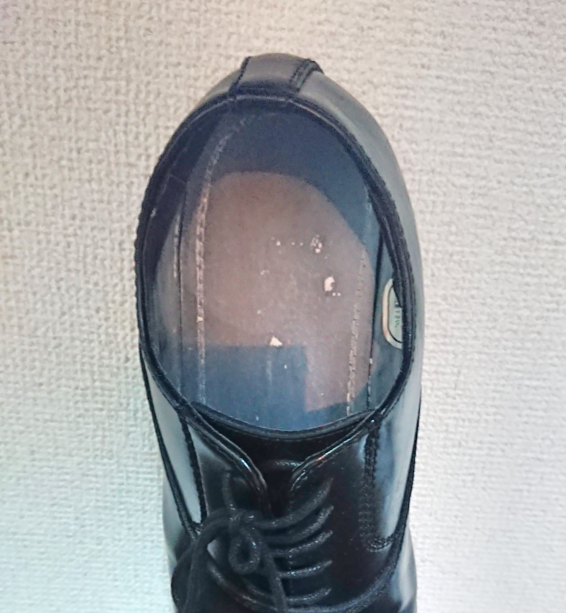
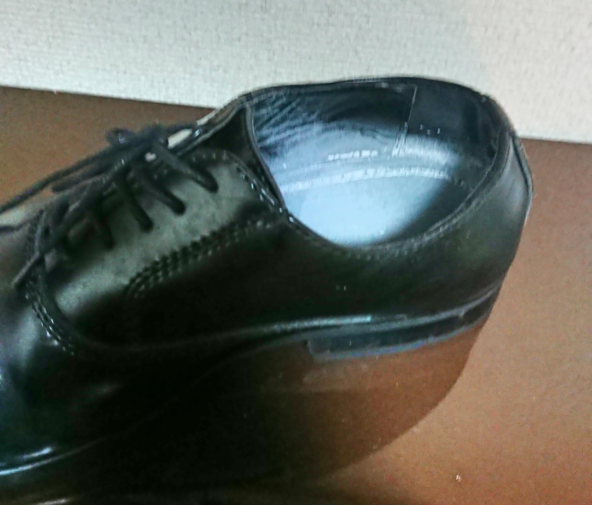

足が臭い、酸っぱい匂い、グランズレメディで楽に消臭
匂いのもとは細菌です。細菌を倒して匂いをなくす。
足が臭い、足が酸っぱい匂いがする。蒸れた靴を長時間はいていると細菌が繁殖し臭くなってしまいます。
飲み会などで靴を脱ぐ時や友人の家にお邪魔するときなど凄く気になりますよね。
そんな足の匂いの悩みを楽に解決してくれるのが、このグランズレメディという粉になります。
私も一時期、革靴を長時間はいていたため、足の匂いに悩まされていましたが、このグランズレメディで匂いがなくなりました。
正直最初は半信半疑でしたが、他の人のレビューや口コミが高評価だったので使ってみたところ大当たりだったわけです。
使ってみた感想やグランズレメディの魅力についてご紹介していきます。
足の匂いの仕組み
まず初めに、なぜ足が臭くなるのかをご説明します。
一番の原因は細菌や雑菌により発生している腐臭や酸っぱい匂いです。
腐臭は「イソ吉草酸アルデヒド」という物質が原因で皮膚常在菌が関与し発生しています。
酸っぱい匂いは「酢酸」が原因です。
皮膚の常在菌が汗や古い角質、皮脂を分解するときに匂いのもととなる物質を発生させています。
足の裏は汗をかきやすい体の部位であり、汗をかきにくい部位の5倍以上の汗が1日で流れ出ます。その汗が常在菌の分解に使われるため足は他の部位よりも匂いやすくなっているといわれています。
また、足の裏は角質が硬く剥がれ落ちる角質の量が多くなります。触ってみるとわかる通り、足の裏って硬くなっている皮膚が多いですよね。
この剥がれ落ちる角質も常在菌の分解により匂いが発生してしまいます。
分解により発生した菌は湿気を好み繁殖します。そのため対策をしないと靴や靴下の中が蒸れ、細菌にとって過ごしやすい環境となってしまいます。
上記の通り汗を多くかく期間に加え、靴や靴下の中に湿気がこもりやすいので足のにおいに悩まされる人は多いわけです。
どうやって使えばいいの？
匂いの原因が分かったところでグランズレメディの使い方についてご説明します。
円筒上の入れ物に入った白い色の粉（パウダー）がグランズレメディです。
付属のスプーンが入っており、この粉を靴の内部にかけることで細菌や雑菌の繁殖を抑え、除菌します。
付属のスプーンに軽く一杯の粉をすくい上げ靴の中に入れます。
 靴の中にいれたら靴をゆすったり立ててコンコンとたたいて粉を広げます。
まんべんなく広がったらOKです。
これを1日1回靴を履く前か脱いだ直後に行います。
これを5日ほど続けるだけど匂いが全くしなくなり驚くほど効果を感じられると思います。
足のにおいではなく靴のにおいだけなくなるのでは？と思われるかもしれませんが、足の酸っぱい匂いや臭い匂いもきっちりなくしてくれます。
また、季節が変わって暫くはかない靴や暫く履いていなかった靴にも使えます。
夏が終わって、しばらく使わないサンダルや風通しの良い靴、冬が終わって暖かいブーツをしまうさいに使っておくと、次のシーズンが来た時に細菌が繁殖しておらず、きれいな靴を履くことができます。
過去にしまっていた靴を久しぶりに掃く場合にもグランズレメディを使うことで細菌を除菌することができます。
注意点として、靴を洗った場合はグランズレメディの効果が切れてしまいますので使いなおすことをお勧めします。
本当に匂いはとれるの？
ホントに今までの努力が何だったんだろうってくらい効果があります。
足を丁寧に毎日洗って、靴も洗って、靴下の洗い方も変えて頑張るよりかなり楽に匂いが取れるのでおすすめです。
粉ってところがポイントで湿気を吸い取るので除湿効果が高く、逆にスプレータイプの消臭グッズは逆に湿気を与えてしまっていると考えれば納得の効果ですね。
剣道の小手やボクシンググローブの匂いも取れるとのことですが、こちらは私が実際試したわけではないのです。
しかし、靴への効果から考えると本当に匂いが取れると思われます。
私は匂いを消すことが目的なので、無香料のグランズレメディを購入していますが、他にミントとフローラルの香りがするものも出ています。
試してみるのもいいかもしれませんね。
粉見たいだけど使用感は？
粉なのでどうしても足の裏や靴下に白い粉が付着してしまいます。
履いていればそのうち白さはなくなっていくので安心してください。
靴の中にかけすぎたりしなければザラザラな感触にもならないのでかけすぎには注意が必要ですね。
他に注意点としては傷口には粉がかからないように注意してください。
普通に皮膚につく分には何も問題ありませんが、体内に入れるのは他の薬品と同じで危険です。
まとめ
除菌と除湿により酸っぱい匂いや臭い匂いを取り除いてくれる粉、グランズレメディ。
いかがでしたでしょうか？
魔法の粉（パウダー）なんて言われていたりもしていて本当に効果が高かったです。
靴を履く前か脱いだ後にさっと1振りするだけの楽さというのもお手軽でよかったです。
匂いに悩まされ靴を脱ぐのが辛かったり、気分が悪くなっていたりしていた人はぜひお試しください。
家事の便利グッズまとめ